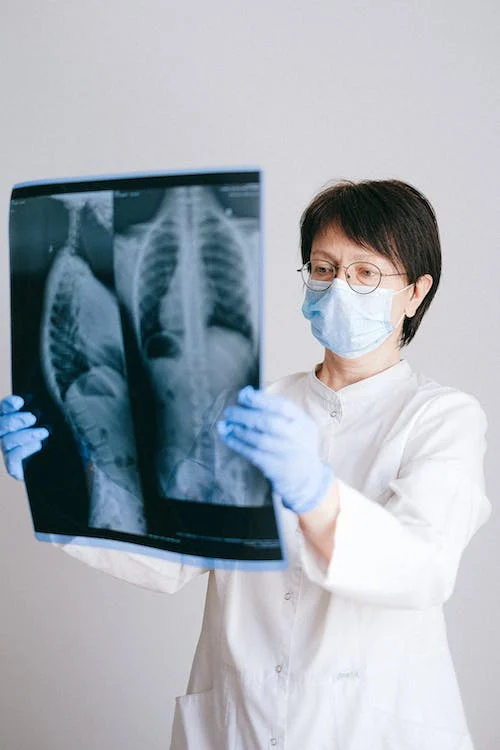

Higiene Postural En
Actividades Laborales y Cotidianas
El objetivo principal de este documento es educar y concientizar a las
personas acerca de la importancia de matener una adecuada higiene postural
en su vida diaria. Queremos proporcionar ejercicios prácticos y ejercicios
simples que ayuden a prevenir lesiones musculoesqueléticas, reducir la
fatiga y promover el bienestar general atravez de una postura saludable.
¿Qué es la higiene postural?
La higiene postural es la práctica de mantener y promover una postura
corporal adecuada durante las actividades diarias, ya sea en el trabajo,
en el estudio o en las actividades cotidianas.
Importancia de la higiene postural
A continuación, se enlistan algunas de las importancias de la higiene
postural:

Prevención de lesiones: Mantener una buena postura
ayuda a prevenir lesiones musculoesqueléticas, como dolores de
espalda, cuello, hombros y articulaciones, que a menudo resultan de
una mala postura a largo plazo.
Reducción del estrés en el cuerpo: La higiene
postural adecuada puede reducir la tensión y el estrés en los músculos
y las articulaciones, lo que a su vez disminuye la probabilidad de
dolor y molestias.
Mejora de la salud de la columna vertebral: Adoptar
una postura correcta contribuye a mantener la columna vertebral
alineada, lo que es fundamental para prevenir afecciones como la
escoliosis, la hernia de disco y la degeneración de la columna
vertebral.
Aumento de la eficiencia y productividad: Una postura
adecuada permite que el cuerpo funcione de manera más eficiente, lo
que puede aumentar la productividad en las actividades diarias, ya sea
en el trabajo, el estudio o el ejercicio.
Prevención de problemas respiratorios: Una postura
adecuada facilita una mejor expansión de los pulmones y la función
respiratoria, lo que puede prevenir problemas respiratorios, como la
dificultad para respirar.
Promoción de la circulación sanguínea: Una postura
adecuada ayuda a garantizar un flujo sanguíneo adecuado en el cuerpo,
lo que puede prevenir problemas circulatorios y la sensación de
entumecimiento en las extremidades.
Mayor calidad de vida: Mantener una buena postura a
lo largo de la vida puede contribuir a una mayor longevidad y una
mejor calidad de vida en la vejez, al prevenir problemas de salud
relacionados con la postura.
Consejos Prácticos
Mantener una postura neutral: Esto implica alinear
adecuadamente la cabeza, el cuello, la espalda y las extremidades.
Ergonimia: Asegurate de que los muebles, equipos y
estaciones de trabajo esten diseñados ergonómicamente para promover
una postura saludable.
Levantamiento adecuado: Al levantar objetos pesados,
es importante utilizar técnicas adecuadas, como flexionar las rodillas
en lugar de la espalda, para evitar lesiones en la columna vertebral.
Variar las posturas: Evitar mantener la misma posición
durante largos periodos de tiempo. Realizar pequeños cambios y
estiramientos periódicos puede ayudar a reducir la faiga y la tensión
muscular.
Lesiones más comunes por la mala postura:
Estas son algunas de las lesiones más comunes que se presenta por una mala postura:
lesiones ⛑
Musculoesqueléticas
Estas son las más comunes y pueden incluir lesiones como el sindrome del únel carpiano, tendinitis, bursitis, y lesiones en la espalda baja.
Dolor se espalda
Es una queja comun y puede estar relacionada con una mala postura al centarse durante largos periodos de tiempo, levantar objetos pesados de manera incorrecta o realizar tareas rpetitivas que afectan la columna vertebral.
Cuello y hombros
Pueden ser causadas por una mala postura al mirar hacia abajo constantemente a dispositivos móviles.
Piernas y pies
Aquellas personas que trabajan de pie durante largos periodos de tiempo pueden experimentar problemas como varices, edema, o incluso lesiones relaciondas con la caida de objetos.
¿Cómo prevenir estas lesiones?
Puedes prevenir estas lesiones implementando pauas activas en un lugar de
estudio o en un lugar de trabajo por varias razones muy importantes:
Ayuda a la Prevención de lesiones mensionadas anteriormente.